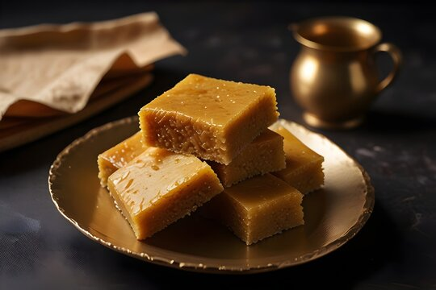

Ingredients for Mysore Pak 🍬
- 1 cup Gram Flour (Besan) 🌾
- 1 cup Ghee (clarified butter) 🧈
- 1 cup Sugar 🍯
- 1/4 cup Water 💧
- A pinch of Cardamom Powder (optional) 🌿
- A few Cashews (chopped or whole, optional) 🌰
Steps 🍴
- Heat a pan and add ghee to it. Let the ghee melt on low-medium heat. 🧈
- In a separate bowl, sift the gram flour (besan) to remove any lumps. 🌾
- In the same pan, add water and sugar to the melted ghee. Stir until the sugar dissolves completely to form a sugar syrup. 🍯💧
- Let the sugar syrup simmer for a few minutes until it thickens slightly, but it doesn’t need to reach a one-thread consistency. 🍯
- Now, gradually add the sifted gram flour (besan) to the sugar syrup while continuously stirring to avoid lumps. 🌾🍯
- Keep stirring the mixture on medium heat. As you stir, the mixture will begin to thicken. Stir until the ghee begins to separate from the sides and the mixture starts to leave the pan. 🧈
- If you like, add a pinch of cardamom powder for flavor at this stage. 🌿
- Grease a plate or tray with ghee and pour the mixture onto it. Use a spatula to spread the mixture evenly. 🍽️
- Optionally, add chopped cashews on top and gently press them into the mixture for added texture. 🌰
- Let the Mysore Pak cool down for a few minutes. Once it’s slightly cooled but still soft, cut it into squares or diamond shapes. 🍬
- Allow it to cool completely before serving. Enjoy the melt-in-the-mouth Mysore Pak! 🧈🍯